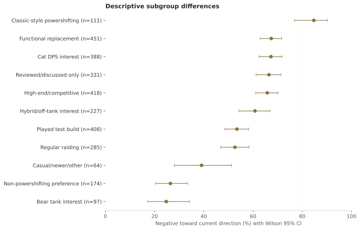
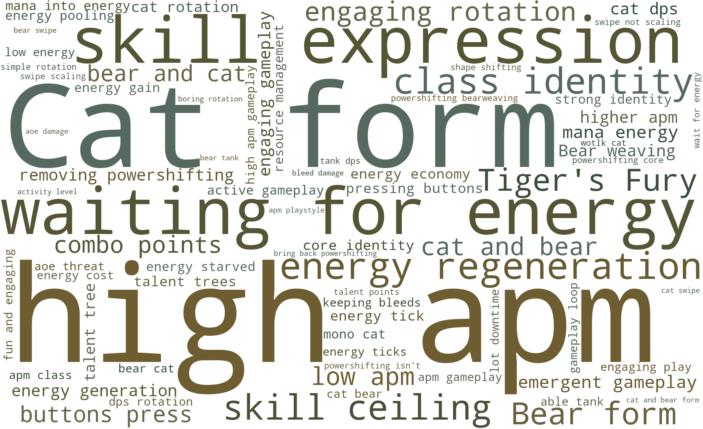
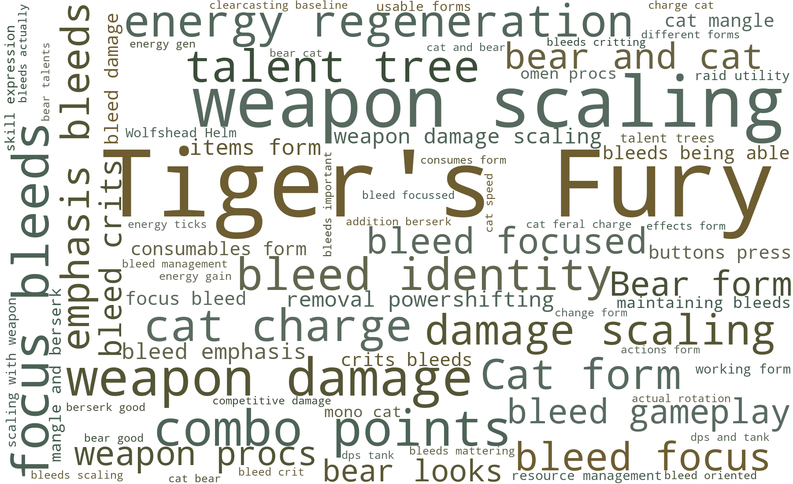
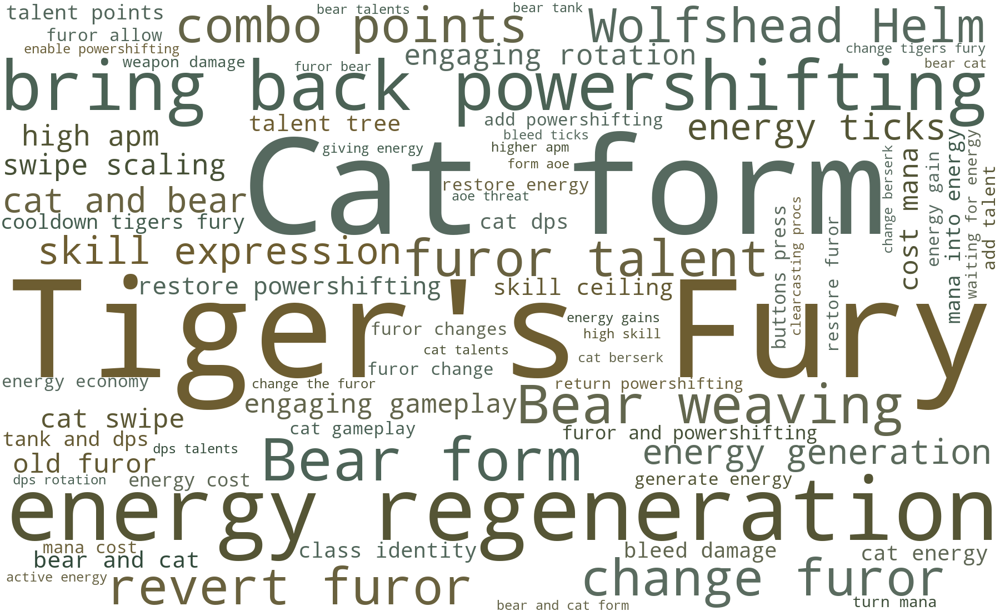
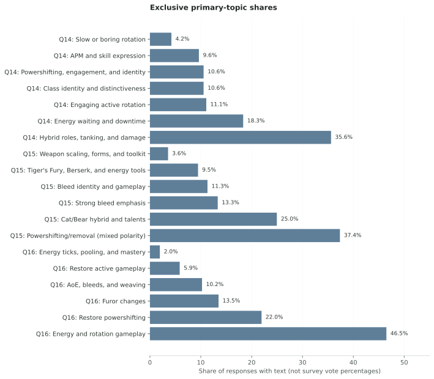

TRANSPARENCY WITHOUT THE DETOUR
Methods, limitations & downloads
The public evidence, survey instrument, analysis rules, and aggregate outputs live here, separate from the main community story.
← Back to the reportSource, timing, and privacy boundary
- Project author: JVMES, a participant in the referenced Druid Classic Discord discussion.
- Authoritative source: a private export of the survey response dataset maintained by the project author. The live response sheet is not publicly linked. Verification materials may be considered upon request, subject to respondent privacy and consent; raw respondent data are not publicly distributed.
- Collection period: September 20, 2026 at 10:01 AM through September 21, 2026 at 6:55 PM America/Chicago.
- Retrieved: September 21, 2026 at 6:57 PM CDT.
- Snapshot: 767 populated timestamp rows × 45 columns.
- Snapshot fingerprint (SHA-256):
92d6d4f690e1d638106f8e0ff5abc9b462ece246b87ca31fa06cb8cbbaa127ea. This can confirm that a rerun used the same private export. It does not authenticate the collection process or reveal the responses. - Restored report and aggregate outputs: public report files on GitHub. The original analysis code remains in the private project archive; it is not included in this restored site.
- Privacy: raw responses and local snapshots are gitignored. Only aggregates, anonymous model weights, and permission-checked excerpts are public.
Design reference boundary: the survey asked about the “currently revealed” design available during the collection window; it did not collect a patch or build identifier. Results should be read as reactions to the public and test-build state respondents encountered on those dates, not to later revisions.
The local project also contains DiscordKit exports of the Druid Classic channels #forever-general, #forever-feral-dps, and #forever-feral-tank, covering discussion from September 12–20, 2026. A public r/classicwow announcement documents how the survey was framed and circulated. These materials establish the author’s perspective and project context only. They are not part of the analyzed corpus, quoted, or counted.
Survey instrument and interpretation boundary
The exact wording and response formats are provided below. Q8 contains an answer choice that explicitly names “comparable activity and meaningful resource decisions,” so Q8 alone cannot independently establish that those properties matter. The main interpretation is triangulated across the importance matrix (Q9), current-design agreement matrix (Q10), forced-priority selection (Q12), test-direction selection (Q13), and written responses (Q14–Q16).
View all question wording and response options
| question | wording | item | response_format | response_options |
|---|---|---|---|---|
| Q1 | 1. How familiar are you with the currently revealed Forever Feral design? | Single choice | I have closely reviewed talents, abilities, footage, or theorycrafting; I have followed detailed community discussion; I have not seen enough to evaluate it; I have played the current test build; I have seen only a basic overview | |
| Q2 | 2. Which versions of Feral have you played extensively? Select all that apply. | Multiple selection | Cataclysm or later Classic; I have limited prior Feral experience; Original Vanilla / 2019 Classic; Private servers; Retail WoW; Season of Discovery; Season of Mastery / Hardcore; The Burning Crusade; Wrath of the Lich King | |
| Q3 | 3. Which best describes your main interest in Forever Feral? | Single choice | Bear tank in organized PvE; Cat DPS in organized PvE; Hybrid Cat/Bear or off-tank play; Leveling, dungeons, or casual PvE; PvP; Theorycrafting, even if I may not main Feral; Undecided / other | |
| Q4 | 4. How would you describe your Feral experience level? | Single choice | Experienced but primarily casual Feral player; High-end or competitive Feral player; I mainly play another Druid role/spec; I mainly play another class; New or prospective Feral player; Regular organized-raiding Feral player | |
| Q5 | 5. Based on what is currently known, how do you feel about the direction of Forever Feral? | Single choice | I do not yet have enough information to judge; Mixed / neutral; Somewhat negative; Somewhat positive; Very negative; Very positive | |
| Q6 | 6. If Forever launched with the currently known design, how likely would you be to main or regularly play Feral? | Single choice | Definitely would; Definitely would not; Not applicable; I did not expect to play Feral; Probably would; Probably would not; Unsure | |
| Q7 | 7. Compared with Classic Feral, the currently known Forever Feral design makes me… | Single choice | About equally excited; Much less excited; Much more excited to play Feral; Not enough experience/information to compare; Somewhat less excited; Somewhat more excited | |
| Q8 | 8. Which statement is closest to your view of powershifting? | Single choice | I do not need literal powershifting if another mechanic provides comparable activity and meaningful resource decisions.; I do not yet have enough information.; I have no strong preference.; I prefer a non-powershifting design, provided it remains engaging and has enough depth.; I prefer a slower, less input-intensive Feral rotation than Classic powershifting.; I specifically want Classic-style powershifting restored. | |
| Q9 | 9. How important is each quality to your enjoyment of Feral? | Frequent actions with little empty time | Matrix, one choice per item | Essential; Very important; Moderately important; Slightly important; Not important |
| Q9 | 9. How important is each quality to your enjoyment of Feral? | Meaningful energy and resource decisions | Matrix, one choice per item | Essential; Very important; Moderately important; Slightly important; Not important |
| Q9 | 9. How important is each quality to your enjoyment of Feral? | A high mastery ceiling | Matrix, one choice per item | Essential; Very important; Moderately important; Slightly important; Not important |
| Q9 | 9. How important is each quality to your enjoyment of Feral? | Shifting between forms during combat | Matrix, one choice per item | Essential; Very important; Moderately important; Slightly important; Not important |
| Q9 | 9. How important is each quality to your enjoyment of Feral? | Maintaining and timing bleeds | Matrix, one choice per item | Essential; Very important; Moderately important; Slightly important; Not important |
| Q9 | 9. How important is each quality to your enjoyment of Feral? | Strong burst windows | Matrix, one choice per item | Essential; Very important; Moderately important; Slightly important; Not important |
| Q9 | 9. How important is each quality to your enjoyment of Feral? | Competitive single-target damage | Matrix, one choice per item | Essential; Very important; Moderately important; Slightly important; Not important |
| Q9 | 9. How important is each quality to your enjoyment of Feral? | Useful multi-target/AoE tools | Matrix, one choice per item | Essential; Very important; Moderately important; Slightly important; Not important |
| Q9 | 9. How important is each quality to your enjoyment of Feral? | Raid utility or a clear reason to bring Feral | Matrix, one choice per item | Essential; Very important; Moderately important; Slightly important; Not important |
| Q9 | 9. How important is each quality to your enjoyment of Feral? | Accessibility for players who prefer a simpler rotation | Matrix, one choice per item | Essential; Very important; Moderately important; Slightly important; Not important |
| Q10 | 10. How much do you agree with each statement about the currently known design? | The rotation appears engaging enough to remain enjoyable over a full raid tier. | Matrix, one choice per item | Strongly agree; Agree; Neither; Disagree; Strongly disagree; Not enough information |
| Q10 | 10. How much do you agree with each statement about the currently known design? | Feral appears to have enough meaningful moment-to-moment decisions. | Matrix, one choice per item | Strongly agree; Agree; Neither; Disagree; Strongly disagree; Not enough information |
| Q10 | 10. How much do you agree with each statement about the currently known design? | The design appears to have an appropriate amount of downtime. | Matrix, one choice per item | Strongly agree; Agree; Neither; Disagree; Strongly disagree; Not enough information |
| Q10 | 10. How much do you agree with each statement about the currently known design? | The design appears to offer enough room for player mastery. | Matrix, one choice per item | Strongly agree; Agree; Neither; Disagree; Strongly disagree; Not enough information |
| Q10 | 10. How much do you agree with each statement about the currently known design? | A stronger bleed identity is appealing to me. | Matrix, one choice per item | Strongly agree; Agree; Neither; Disagree; Strongly disagree; Not enough information |
| Q10 | 10. How much do you agree with each statement about the currently known design? | The current bleed emphasis appears active rather than passive. | Matrix, one choice per item | Strongly agree; Agree; Neither; Disagree; Strongly disagree; Not enough information |
| Q10 | 10. How much do you agree with each statement about the currently known design? | The current design preserves Feral's shapeshifting identity. | Matrix, one choice per item | Strongly agree; Agree; Neither; Disagree; Strongly disagree; Not enough information |
| Q10 | 10. How much do you agree with each statement about the currently known design? | The current design appears distinct from other melee specs. | Matrix, one choice per item | Strongly agree; Agree; Neither; Disagree; Strongly disagree; Not enough information |
| Q10 | 10. How much do you agree with each statement about the currently known design? | Numerical tuning is a bigger concern for me than rotational design. | Matrix, one choice per item | Strongly agree; Agree; Neither; Disagree; Strongly disagree; Not enough information |
| Q10 | 10. How much do you agree with each statement about the currently known design? | I would accept no DPS increase if a change made the rotation more engaging. | Matrix, one choice per item | Strongly agree; Agree; Neither; Disagree; Strongly disagree; Not enough information |
| Q11 | 11. What is your current reaction to each area? | Furor and the loss/reduction of powershifting | Matrix, one choice per item | Very positive; Somewhat positive; Neutral; Somewhat negative; Very negative; Not enough information |
| Q11 | 11. What is your current reaction to each area? | Energy generation and pooling | Matrix, one choice per item | Very positive; Somewhat positive; Neutral; Somewhat negative; Very negative; Not enough information |
| Q11 | 11. What is your current reaction to each area? | Rip/Rake and the bleed emphasis | Matrix, one choice per item | Very positive; Somewhat positive; Neutral; Somewhat negative; Very negative; Not enough information |
| Q11 | 11. What is your current reaction to each area? | Tiger's Fury | Matrix, one choice per item | Very positive; Somewhat positive; Neutral; Somewhat negative; Very negative; Not enough information |
| Q11 | 11. What is your current reaction to each area? | Clearcasting / Omen of Clarity | Matrix, one choice per item | Very positive; Somewhat positive; Neutral; Somewhat negative; Very negative; Not enough information |
| Q11 | 11. What is your current reaction to each area? | Combo points being stored on the player | Matrix, one choice per item | Very positive; Somewhat positive; Neutral; Somewhat negative; Very negative; Not enough information |
| Q11 | 11. What is your current reaction to each area? | Berserk | Matrix, one choice per item | Very positive; Somewhat positive; Neutral; Somewhat negative; Very negative; Not enough information |
| Q11 | 11. What is your current reaction to each area? | AoE / Swipe tools | Matrix, one choice per item | Very positive; Somewhat positive; Neutral; Somewhat negative; Very negative; Not enough information |
| Q11 | 11. What is your current reaction to each area? | Cat/Bear/caster weaving possibilities | Matrix, one choice per item | Very positive; Somewhat positive; Neutral; Somewhat negative; Very negative; Not enough information |
| Q11 | 11. What is your current reaction to each area? | The revealed talent structure | Matrix, one choice per item | Very positive; Somewhat positive; Neutral; Somewhat negative; Very negative; Not enough information |
| Q12 | 12. Which areas most need developer attention? Select up to three. | Multiple selection | AoE; Bleed gameplay; Clearcasting/Omen; Combo-point generation/spending; Energy economy; Itemization/scaling; Not enough information; Nothing currently stands out; Powershifting/Furor; PvP; Raid utility/desirability; Rotation/activity level; Shapeshifting or weaving identity; Single-target damage/tuning; Talent design; Tiger's Fury | |
| Q13 | 13. Which possible directions would you be open to testing? Select all that apply. | Multiple selection | Add another active resource-conversion mechanic; Add intentional Cat/Bear/caster weaving incentives; Add more Clearcasting interactions; I would rather evaluate a complete build before choosing solutions; Increase passive energy generation; Let bleeds interact with energy or other active decisions; Preserve a slower rotation with fewer required inputs; Restore Classic-style powershifting; Use Tiger's Fury more frequently or allow gameplay-driven cooldown resets | |
| Q14 | 14. What is the single most important thing you want the developers to understand about the current Feral design? | Open text | Free response | |
| Q15 | 15. What part of the current Forever Feral direction do you most want preserved? | Open text | Free response | |
| Q16 | 16. If you could change one mechanic or design decision, what would you change—and what player experience would that improve? | Open text | Free response | |
| Q17 | 17. May your written response be quoted anonymously in a community feedback report? | Single choice | No, summarize it only in aggregate; Yes, it may be quoted anonymously |
Sample and data quality
Valid responses are rows with populated timestamps, not allocated sheet rows. The snapshot contains 0 exact duplicate answer rows and 18 rows sharing a timestamp. Shared timestamps are possible in a rapid-response survey and are not treated as duplicates without matching answers; all were retained. “Not enough information” remains in every stated denominator.
| question | columns | missing_cells | respondents_with_any_missing | respondents | complete_percent |
|---|---|---|---|---|---|
| Q1 | 1 | 0 | 0 | 767 | 100.0 |
| Q2 | 1 | 0 | 0 | 767 | 100.0 |
| Q3 | 1 | 0 | 0 | 767 | 100.0 |
| Q4 | 1 | 0 | 0 | 767 | 100.0 |
| Q5 | 1 | 0 | 0 | 767 | 100.0 |
| Q6 | 1 | 0 | 0 | 767 | 100.0 |
| Q7 | 1 | 0 | 0 | 767 | 100.0 |
| Q8 | 1 | 0 | 0 | 767 | 100.0 |
| Q9 | 10 | 0 | 0 | 767 | 100.0 |
| Q10 | 10 | 0 | 0 | 767 | 100.0 |
| Q11 | 10 | 0 | 0 | 767 | 100.0 |
| Q12 | 1 | 0 | 0 | 767 | 100.0 |
| Q13 | 1 | 8 | 8 | 767 | 99.0 |
| Q14 | 1 | 3 | 3 | 767 | 99.6 |
| Q15 | 1 | 120 | 120 | 767 | 84.4 |
| Q16 | 1 | 149 | 149 | 767 | 80.6 |
| Q17 | 1 | 0 | 0 | 767 | 100.0 |
Subgroup comparisons
Subgroup results are descriptive, not causal. Groups under 30 are omitted. Major proportions include Wilson 95% confidence intervals, which describe uncertainty within this self-selected sample rather than making it representative.

| group | outcome | count | denominator | percent | ci_low | ci_high | minimum_group_size |
|---|---|---|---|---|---|---|---|
| Cat DPS interest | Negative direction | 261 | 388 | 67.3 | 62.4 | 71.7 | 30 |
| Cat DPS interest | Would play | 148 | 388 | 38.1 | 33.4 | 43.1 | 30 |
| Cat DPS interest | Less excited | 265 | 388 | 68.3 | 63.5 | 72.7 | 30 |
| Bear tank interest | Negative direction | 24 | 97 | 24.7 | 17.2 | 34.2 | 30 |
| Bear tank interest | Would play | 62 | 97 | 63.9 | 54.0 | 72.8 | 30 |
| Bear tank interest | Less excited | 25 | 97 | 25.8 | 18.1 | 35.3 | 30 |
| Hybrid/off-tank interest | Negative direction | 138 | 227 | 60.8 | 54.3 | 66.9 | 30 |
| Hybrid/off-tank interest | Would play | 112 | 227 | 49.3 | 42.9 | 55.8 | 30 |
| Hybrid/off-tank interest | Less excited | 147 | 227 | 64.8 | 58.3 | 70.7 | 30 |
| High-end/competitive | Negative direction | 275 | 418 | 65.8 | 61.1 | 70.2 | 30 |
| High-end/competitive | Would play | 185 | 418 | 44.3 | 39.6 | 49.1 | 30 |
| High-end/competitive | Less excited | 283 | 418 | 67.7 | 63.1 | 72.0 | 30 |
| Regular raiding | Negative direction | 150 | 285 | 52.6 | 46.8 | 58.4 | 30 |
| Regular raiding | Would play | 129 | 285 | 45.3 | 39.6 | 51.1 | 30 |
| Regular raiding | Less excited | 157 | 285 | 55.1 | 49.3 | 60.8 | 30 |
| Casual/newer/other | Negative direction | 25 | 64 | 39.1 | 28.1 | 51.3 | 30 |
| Casual/newer/other | Would play | 27 | 64 | 42.2 | 30.9 | 54.4 | 30 |
| Casual/newer/other | Less excited | 27 | 64 | 42.2 | 30.9 | 54.4 | 30 |
| Played test build | Negative direction | 218 | 408 | 53.4 | 48.6 | 58.2 | 30 |
| Played test build | Would play | 199 | 408 | 48.8 | 44.0 | 53.6 | 30 |
| Played test build | Less excited | 227 | 408 | 55.6 | 50.8 | 60.4 | 30 |
| Reviewed/discussed only | Negative direction | 220 | 331 | 66.5 | 61.2 | 71.3 | 30 |
| Reviewed/discussed only | Would play | 132 | 331 | 39.9 | 34.7 | 45.2 | 30 |
| Reviewed/discussed only | Less excited | 224 | 331 | 67.7 | 62.5 | 72.5 | 30 |
| Classic-style powershifting | Negative direction | 94 | 111 | 84.7 | 76.8 | 90.2 | 30 |
| Classic-style powershifting | Would play | 33 | 111 | 29.7 | 22.0 | 38.8 | 30 |
| Classic-style powershifting | Less excited | 97 | 111 | 87.4 | 79.9 | 92.3 | 30 |
| Functional replacement | Negative direction | 304 | 451 | 67.4 | 62.9 | 71.6 | 30 |
| Functional replacement | Would play | 180 | 451 | 39.9 | 35.5 | 44.5 | 30 |
| Functional replacement | Less excited | 333 | 451 | 73.8 | 69.6 | 77.7 | 30 |
| Non-powershifting preference | Negative direction | 46 | 174 | 26.4 | 20.4 | 33.4 | 30 |
| Non-powershifting preference | Would play | 105 | 174 | 60.3 | 52.9 | 67.3 | 30 |
| Non-powershifting preference | Less excited | 32 | 174 | 18.4 | 13.3 | 24.8 | 30 |
Written-response patterns
The three questions were modeled separately. Phrase-cloud sizes use the number of distinct responses mentioning a two- or three-word phrase, not repetition inside one response. Generic fragments and survey boilerplate were removed, while domain phrases such as “Tiger’s Fury,” “energy pooling,” “skill expression,” and “Bear weaving” stay intact.



Topic modeling
TF-IDF unigrams and bigrams feed deterministic non-negative matrix factorization. Candidate solutions from 4–10 topics were inspected for stability, repeated components, top terms, and high-weight responses. Labels are human interpretations of both the terms and representative comments. Primary-topic shares are not survey vote percentages.

Manual thematic and polarity check
Rule-based mention coding provides a second, transparent layer for the core themes. Categories overlap. Ambiguous comments are not forced into a position. Q15 powershifting mentions are separately checked because a topic model cannot reliably distinguish “preserve powershifting” from “preserve its removal.”
| theme | count | denominator | percent | coding |
|---|---|---|---|---|
| Bleed identity | 269 | 767 | 35.1 | Rule-based mention; non-exclusive |
| Powershifting or a functional equivalent | 126 | 767 | 16.4 | Rule-based mention; non-exclusive |
| AoE/Swipe | 115 | 767 | 15.0 | Rule-based mention; non-exclusive |
| High APM/activity | 93 | 767 | 12.1 | Rule-based mention; non-exclusive |
| Hybrid/off-tank identity | 91 | 767 | 11.9 | Rule-based mention; non-exclusive |
| Cat/Bear/caster weaving | 90 | 767 | 11.7 | Rule-based mention; non-exclusive |
| Distinctiveness from Rogue | 89 | 767 | 11.6 | Rule-based mention; non-exclusive |
| Energy downtime | 69 | 767 | 9.0 | Rule-based mention; non-exclusive |
| Skill expression/mastery | 64 | 767 | 8.3 | Rule-based mention; non-exclusive |
| Shapeshifting identity | 49 | 767 | 6.4 | Rule-based mention; non-exclusive |
| Literal powershifting restoration | 45 | 767 | 5.9 | Rule-based mention; non-exclusive |
| Raid utility | 43 | 767 | 5.6 | Rule-based mention; non-exclusive |
| Numerical tuning | 26 | 767 | 3.4 | Rule-based mention; non-exclusive |
| Non-powershifting but engaging | 4 | 767 | 0.5 | Rule-based mention; non-exclusive |
| category | count | denominator | percent |
|---|---|---|---|
| Not mentioned | 694 | 767 | 90.5 |
| Mentioned; polarity unclear | 33 | 767 | 4.3 |
| Preserve removal/non-powershifting | 31 | 767 | 4.0 |
| Ambiguous/mixed | 7 | 767 | 0.9 |
| Preserve/restore | 2 | 767 | 0.3 |
Limitations
- This is a self-selected sample of engaged Feral players recruited through community channels over a short period.
- Community-channel reach, question wording, response dependence, and an evolving test build limit generalization.
- No combat logs, telemetry, parses, account history, or externally verified skill measures were collected.
- The survey measures reactions and design priorities, not whether a proposed mechanic will balance correctly in raids, dungeons, leveling, or PvP.
- Topic models summarize language; they do not measure votes and are weak at negation.
- Rule-based themes favor transparency over perfect recall and should be read as mentions, not exhaustive hand coding.
- Subgroup differences are associations inside this sample, not causal effects.
Aggregate downloads
Multiselect files explicitly note that percentages may exceed 100%. No raw response export is included.